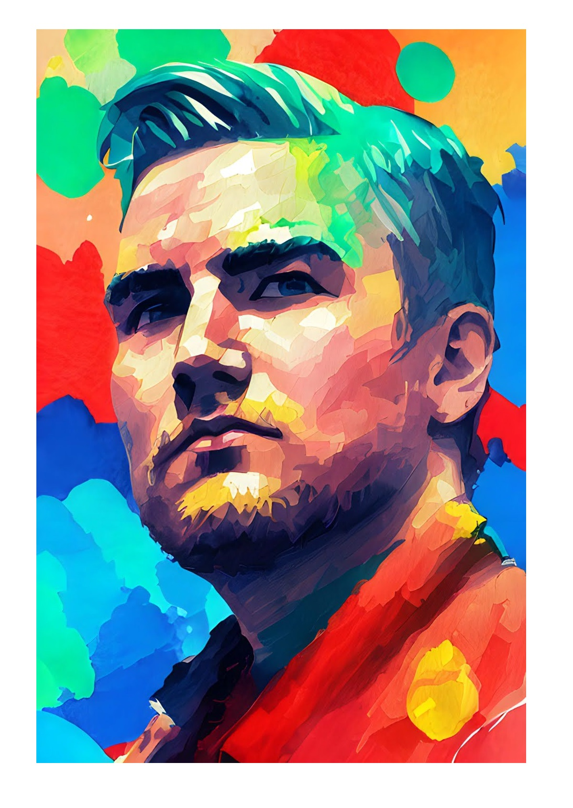
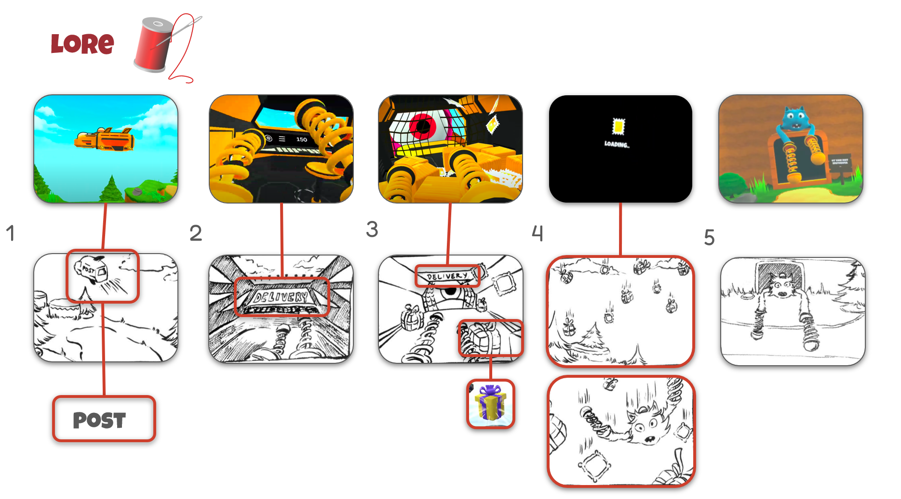

Who am i?
Biography
I’m a 30-year-old with a sense of humor, born and raised in the countryside, where I developed a deep appreciation for peace and quiet. I’ve always valued a slower pace of life and dislike unnecessary stress and hustle. Growing up in this environment has shaped my personality and the way I approach both work and life.
Over the years, I’ve cultivated various interests that align with my academic pursuits, and these hobbies have naturally evolved into the foundation for my future goals. I’m passionate about what I do, and I seek to find meaning and fulfillment in my work and personal life.
Respect is incredibly important to me, and I value people who reciprocate the energy and consideration they receive. I strive to surround myself with individuals who share these values, creating a positive and respectful environment in which we can all grow and thrive.

Academic Interests
I am interested in how User Experience (UX) design, psychology, and information technology (IT) come together to create better digital products. I focus on how understanding human behavior and thought processes can help design more user-friendly and accessible technology. By applying psychological principles, I aim to make digital tools easier to use and more enjoyable for everyone.
In the IT field, I am particularly interested in how new technologies, like artificial intelligence and data analytics, can adapt and personalize experiences for different users. My goal is to explore how these tools can improve user interactions and make technology work better for people.
Overall, my work aims to combine UX design, psychology, and IT to create digital systems that are both efficient and user-centered.

Future Goals
My long-term goal is to work in a UX-focused company, ideally within the gaming industry or a field where I can contribute to projects that make a real difference. I’m passionate about creating user experiences that are not only engaging and enjoyable but also meaningful. The idea of working on something that has a positive impact, whether that’s through entertainment, education, or addressing global issues like the environment, is deeply important to me. I believe that UX design has the power to shape how people interact with technology in ways that can drive change. Whether it’s through developing immersive games that encourage creativity and critical thinking or contributing to platforms that promote sustainability and environmental awareness, I want to use my skills to work on projects that align with my values. Ultimately, I aim to be part of a team that shares this vision and creates solutions that are both innovative and impactful.